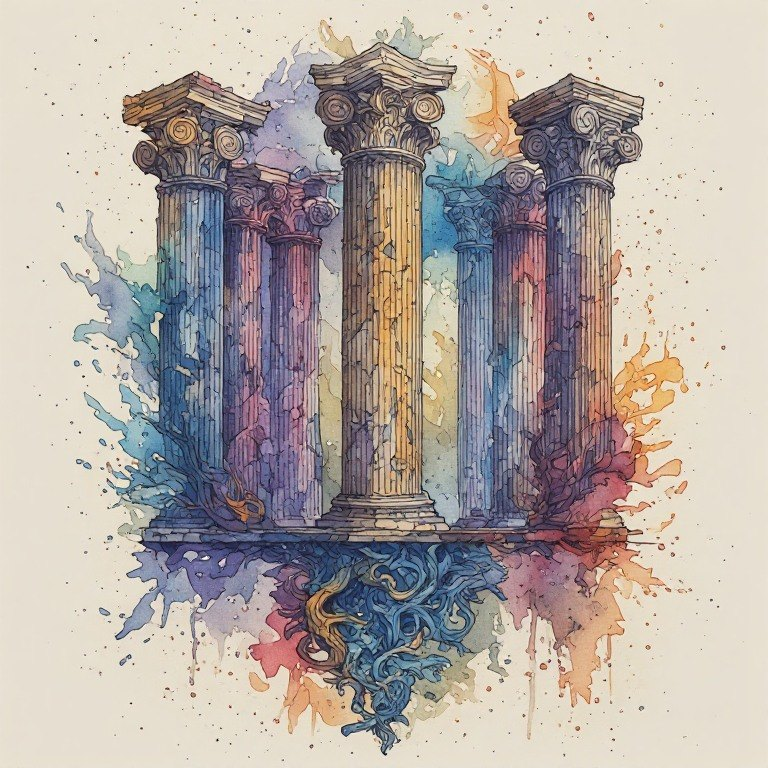

The Eleven Pillars

Radical Immanence · The Marguerite Young Society
How the Pillars Came to Be
The Eleven Pillars on this site are the final form of a philosophy I developed over several years of reading Marguerite Young. They did not arrive all at once.
I found the first five pillars first:
- Not One Self
- Reality Is Constructed
- Grief Doesn’t End
- Witnessing Is the Core Ethical Act
- Build Anyway, Knowing It’s Temporary
Later I found five more that extended them:
- Unfinished Is Honest
- The Margins Reveal the Truth
- The Past Doesn’t Go Away
- Language Shapes What’s Possible
- The Sacred Is Here
The last pillar, the Crossing Point, came after that. It works differently from the others. It is the form that holds the first ten together, so it is not always counted alongside them.
Because the books on this site were written along the way, some of them reflect earlier stages. You will find books built on five pillars, books built on ten, and pillars called by older names such as the plural self, illusion as primary, recursive construction, or sedimentary time. The workbook Here Is Enough also gathers twelve teaching essays under the name pillars. I have left these books as they were written, because they show the philosophy taking shape.
Wherever the numbering or names differ, the Eleven Pillars are the final version.
The Pillars
Each pillar has its own page with its definition and a list of every page on the site that discusses it. Wherever a pillar is named across the site, its first mention on the page links back here.
- Pillar 1 Not One Self (146 pages)
- Pillar 2 Reality Is Constructed (130 pages)
- Pillar 3 Grief Doesn't End (138 pages)
- Pillar 4 Witnessing Is The Core Ethical Act (110 pages)
- Pillar 5 Build Anyway, Knowing It's Temporary (120 pages)
- Pillar 6 Unfinished Is Honest (134 pages)
- Pillar 7 The Margins Reveal the Truth (129 pages)
- Pillar 8 The Past Doesn't Go Away (139 pages)
- Pillar 9 Language Shapes What's Possible (123 pages)
- Pillar 10 The Sacred Is Here (136 pages)
- Pillar 11 The Crossing Point (115 pages)